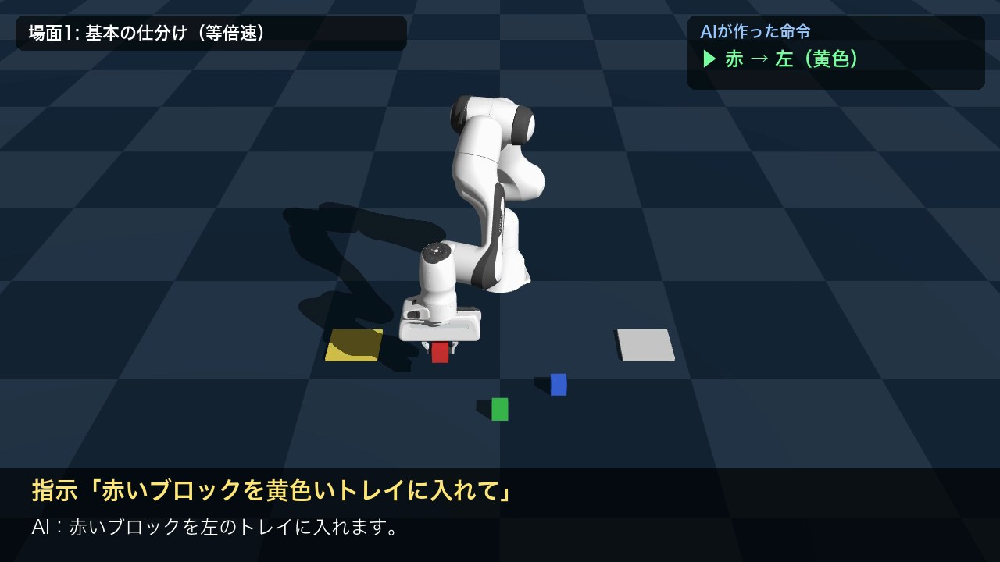
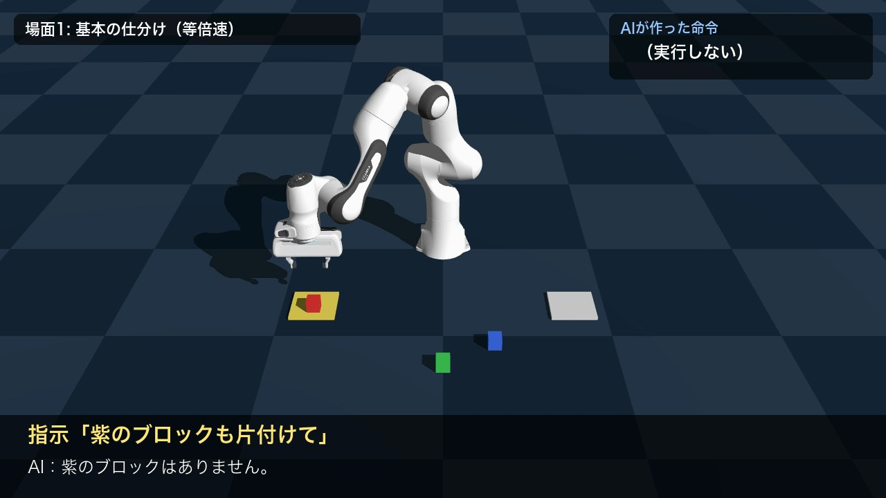
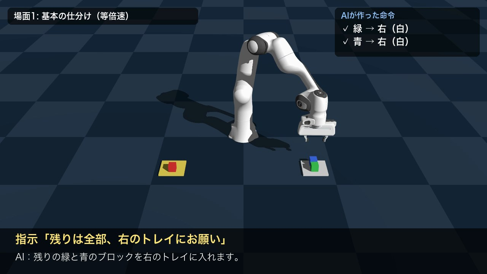
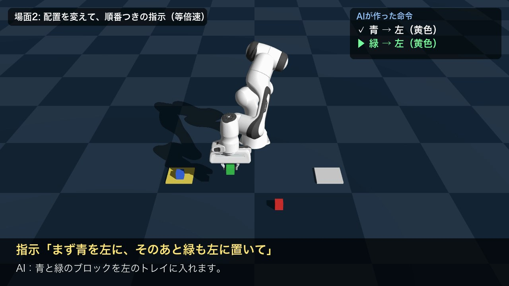

ことばで指示する仕分けロボット
日本語の指示をローカルの言語モデルがロボットの命令に変換し、ロボットアームが色ブロックを仕分ける
講座Physical AI 応用1講座 最終課題
動画（YouTubeのURL） 84秒・等倍速
コードhttps://github.com/mh-0201/pai-final-sorting-robot-1
使用技術Genesis 1.4.5（シミュレータ）／ Franka Emika Panda ／ Ollama + qwen2.5:3b（言語モデル、推論のみ）／ Python 3.11
1. 概要と目的
ロボットに作業を頼むとき、現場の人がプログラムを書いたり座標を指定したりするのは大変です。
そこで本課題では、「赤いブロックを黄色いトレイに入れて」のような普段の言葉で指示するだけで、ロボットアームが動く仕組みを作りました。
物流倉庫での荷物の仕分けや、家庭での片付けを手伝うロボットを、小さな形で再現することを目指しています。
AIの役割は、あいまいな日本語の指示を、ロボットが実行できる正確な命令に「翻訳」することです。
言語モデルはクラウドではなく Mac上でローカルに動かしており、インターネット接続やAPIキーがなくても動作します。
2. システム構成
① 日本語の指示「残りは全部、
右のトレイにお願い」
▶
② 言語モデル（AI）qwen2.5:3b
指示を命令の列に変換
▶
③ 命令（JSON）緑→右、青→右
▶
④ 逆運動学（IK）手先の位置から
関節角度を逆算
▶
⑤ 動作つかむ→運ぶ
→置く→確認
| ファイル | 役割 |
|---|
ai_planner.py | 指示文と「まだ仕分けていないブロック」を言語モデルに渡し、命令（JSON）と返事の文を受け取る |
robot.py | シーン（アーム・色ブロック3個・トレイ2枚・カメラ）の作成と、ピック＆プレース動作 |
make_video.py | 2つの場面を録画し、タイトル・字幕・結果を付けて提出用の動画にまとめる |
test_planner.py | いろいろな言い回しで、AIの変換が正しいかを確かめるテスト |
AIの部分：指示を命令に変換する
言語モデルには、使えるブロックとトレイ、ルール、例を伝えたうえで、次の形のJSONだけを出力させます。
指示「残りは全部、右のトレイにお願い」（未仕分け: 緑・青）
→ {"actions": [{"cube": "green", "tray": "right"}, {"cube": "blue", "tray": "right"}],
"reply": "残りの緑と青のブロックを右のトレイに入れます。"}
ロボットの部分：つかむ→運ぶ→置く
命令を受け取ると、ブロックの現在位置を読み取り、手先を「真上 → つかむ高さ → 持ち上げ → トレイの上 → 置く高さ」と順に動かします。
各目標位置への関節角度は Genesis の逆運動学（IK）で計算し、今の角度から目標の角度へ、動き始めと終わりがゆっくりになるように補間して滑らかに動かしています。
最後に、ブロックがトレイの上にあるかを自動で判定します。
3. 工夫した点
- AIが「できない命令」を出せないようにした：Ollama の structured outputs 機能で出力の形（JSON Schema）を固定し、色は red/green/blue、トレイは left/right しか選べないようにしました。さらにプログラム側でも再チェックし、ロボットが実行できない命令は取り除きます。
- 無い物や関係のない指示には、動かずに理由を返す：「紫のブロックも片付けて」には「紫のブロックはありません」と返して動きません。間違った物を動かさないことは、実際の現場では特に大切だと考えました。
- 状況に合わせた解釈：まだ仕分けていないブロックをAIに伝えることで、「残りは全部」が「今残っている緑と青」と正しく解釈されます。「まず青を左に、そのあと緑も」のような順番つきの指示にも対応しています。
- 左右を「指示する人」の目線で定義した：最初はロボットから見た左右にしていましたが、正面から撮った映像では左右が逆に映り、見る人が混乱しました。ロボットの正面に立って指示する人から見た左右に定義し直したことで、画面の左右と一致し、指示する人にとっても自然になりました。
- 確実につかむための調整：つかんでいる間は指に内向きの力をかけ続けて、運ぶ途中で落とさないようにしました。また、同じトレイに2個目を置くときは位置をずらし、ブロックが重ならないようにしました。
- 見てわかる動画：字幕で「指示」「AIの返事」「AIが作った命令（実行中は▶、完了は✓）」を同時に表示し、AIの判断とロボットの動作の対応が一目でわかるようにしました。カメラの位置は何案か比べ、ロボット全体とブロックが字幕に隠れずに見える位置を選びました。
4. 結果
| 評価 | 結果 |
|---|
| 指示の変換テスト（言い回しを変えた8通り） | 8 / 8 正解（「青いのを黄色い皿に置いてください」「全部右のトレイに片付けて」「今日の天気は？」など）。1回の変換は約1〜3秒 |
| デモ動画での仕分け（2場面・5つの指示） | 6 / 6 回成功。紫のブロックの指示には動かずに返答 |
| 手先の位置の精度（IK） | 目標との誤差は最大 7.6 mm（4 cm のブロックをつかむには十分） |
| 1回の仕分けにかかる時間 | シミュレーション内で約 9 秒 |

図1 「赤いブロックを黄色いトレイに入れて」：赤をつかんで運ぶ

図2 「紫のブロックも片付けて」：存在しないので動かずに返答

図3 「残りは全部、右のトレイにお願い」：緑と青を順に仕分け完了

図4 配置を変えた場面2：「まず青を左に、そのあと緑も左に」
5. 苦労した点と対処
- 環境構築：以前入れていた Anaconda が Intel Mac 用で、M1 Mac では起動しませんでした。M1 に対応した Python 管理ツール uv で環境を作り直しました。ROS2 + Gazebo は M1 Mac では仮想環境が必要になるため、pip でそのまま入る Genesis を選びました。
- ライブラリの変更：Genesis の最新版では、録画の保存方法など、参考にした記事と書き方が変わっている部分がありました。関数の定義を直接調べて対応しました。
- AIの返事に英語が混ざる：「残りのgreenとblue」のように英語が混ざることがあったため、AIへの指示文に「色は日本語で書く」ルールを追加し、渡す情報にも日本語名を付けました。
6. 限界と今後の展望
- ブロックの位置を「見て」いない：現在はシミュレータから位置を直接読み取っています。カメラ画像から物体検出や視覚言語モデルで位置と色を認識できれば、実機にも近づきます。
- 指示できる動作が「置く」だけ：「積み上げて」「並べて」など、動作の種類を増やしたいです。
- 小さな言語モデルの限界：3B（30億パラメータ）の小さなモデルのため、より複雑な指示では誤解する可能性があります。テストの例を増やして弱点を調べることが次の課題です。
- 実機での検証：SO-101 などの安価なロボットアームで同じ仕組みを試したいです。
※ 開発にあたっては、環境構築やコードの作成にAIアシスタント（Claude Code）の支援を受けました。設計の判断・動作の確認・動画の構成は、自分で確かめながら進めています。